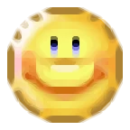
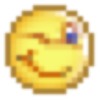

GIF-ul original are numai 18×18 px. Varianta actuală este deja xBR 8×; interpolarea fidelă păstrează animația, dar nu poate inventa detalii. Prototipurile SVG de mai jos sunt redesenări animate, nu emoticoane oficiale Yahoo!



Originalele Yahoo! Messenger sunt păstrate ca referință și fallback. Niciun WebP din colecția activă nu a fost înlocuit.